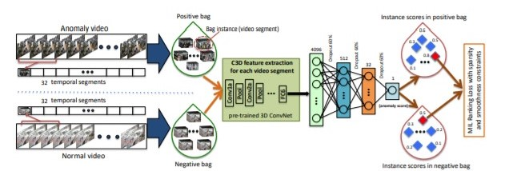

위 C3D와 segment 변환을 거쳐 영상을 전처리해 feature를 추출합니다.
추출된 feature를 (1,4096)형태로 모델에 넣어 각 bag instance의 이상행동 score를 정합니다.
positive bag과 negative bag 안의 가장 높은 score를 가진 instance를 비교하여, positive bag instance의 score가 더 크다면 맞고,
negative bag instance의 score가 더 크다면 틀린 판단이라고 정의해 손실함수에 적용하고 반복적으로 학습하여 loss를 줄입니다.
위 모델은 이상행동의 기준이 주관적이기 때문에 어려웠던 기존의 분류 문제를 재귀적인 방법으로 해결하고 높은 수준의 성능을 보입니다.